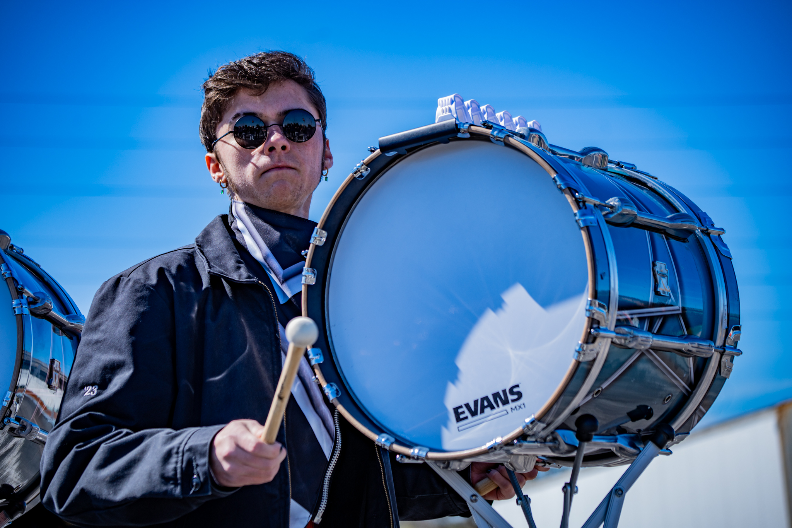

| |
|
Drew Willits
Drew Willits is a Freshman Game Design and Animation Major from West Chester, Ohio. Drew lives with his mother, father, brother, and dog named Jax. Some games Drew enjoys are: Guilty Gear Strive, Black Myth Wukong, Valorant, Uncharted 4, Super Smash Brother’s Ultimate, Mario Kart 8, Street fighter 6, and more! He also enjoys listening to music and playing dodgeball. Some of Drew's favorite artists currently are Owl City, C418, and AJR, He enjoy's their lyricism and instrumentation.
Drew is currently an Eagle Scout and wants people to know how much he has learned and how hard he has worked to get that title. "My Eagle Scout project was building several shelves and a workbench for my old elementary school, as they had a program for donated goods to help kids who didn’t have as much within the school."
Drew hopes to create his own games someday, or even possibly work on a large team creating a AAA game. Drew has faith in the logevity of the video games industry and is excited to add his creative vision to the market.
|
Jackson Sawyer
Jackson Sawyer is an ETBD Major from Dayton, Ohio. Some of Jackson's favorite games are Valorant, Risk of Rain, Deadlock, and Super Smash Bros Melee. Jackson also enjoys playing the drums and cooking.
Over the Past few years Jackson has had the opportunity to perform in many different types of performing arts associations for the marching arts. These groups include The Academy Drum and Bugle Corps and ConneXus Independent. Jackson plays the marching bass drum and also teaches marching band at Northmont High School in Clayton, Ohio.
Jackson would love to work in the eSports industry managing either the events or the teams. His passion for the gaming industry is unmatched.
|
 |
 |
Piper Fischer
Piper Fischer is an ETBD Games and Simulation student from Cincinnati Ohio. She’s had a passion for video games and game art since she was little. Her favorite games are Undertale, Omori, Guitar Hero, Genshin Impact, Honkai Star Rail, and Project Sekai. She enjoys drawing in her free time, and loves to design her own characters. In highschool she participated in theater and competed in the Drawn art show. She has three dachshunds named Erza, Griz, and Violet.
|
Ethan Becker
Ethan is from Fairborn Ohio which is just a lot of corn fields and farm animals with the occasional small town thrown in there .
Ethan is a Sports media and communication major. Ethan hopes to one day become a sports broadcaster as It's always been his dream to become one. He originally wanted to be a meteorologist but decided that was not his calling but knew at the same time he wanted to be on TV. Then one day he realized that sports was his calling as he was always heavily involved and always knew what he was talking about when it came to sports. Ethan's favorite games are Pokemon, Super Mario, Valorant, Peggle, Five Nights at Freddys and Overwatch. Favorite game of all time is Pokemon White 2 as it's the best pokemon generation and it can not be argued. Peggle is a top ten video game of all time and is an instant classic. Ethan has a dog named Po which is very important to him.
|
 |
|
Elijah Cline
Elijah Cline is a Game Studies Major from Liberty Township, Ohio. Some of Elijah's favorite games are The Walking Dead, Fallout, Five Nights at Freddys, Splatoon and Minecraft. "My hometown is Liberty Township but I am originally from Canada and moved down here to Ohio when I was 5, ever since I’ve been obsessed with technology much like my dad. I'm hoping to get a job as a concept artist when I am fully finished with college and out on my own in the real world. I'm hoping to work for a small company who has lots of passion when it comes to creating video games. My dream job is to make movies or shows for the mass media with complex stories and rich characters."
|
Scott Fero
Scott Fero is a Games and Simulation major at Miami University, coming from Kettering, Ohio. Scott Fero has a passion for video games and everything storytelling, spending most of his free time working on the latter. He loves writing and telling stories whenever he gets the chance, often using the game Minecraft as his media of choice. While Minecraft stands confidently at the top of his list of favorite games, other games he likes are: Destiny 2, Dying Light 1, Dying Light 2, Quantum Break, and God of War Ragnarok. Scott Fero’s long term dream is to learn to make his own video games that, hopefully, tell impactful, meaningful, and important stories.
|
 |